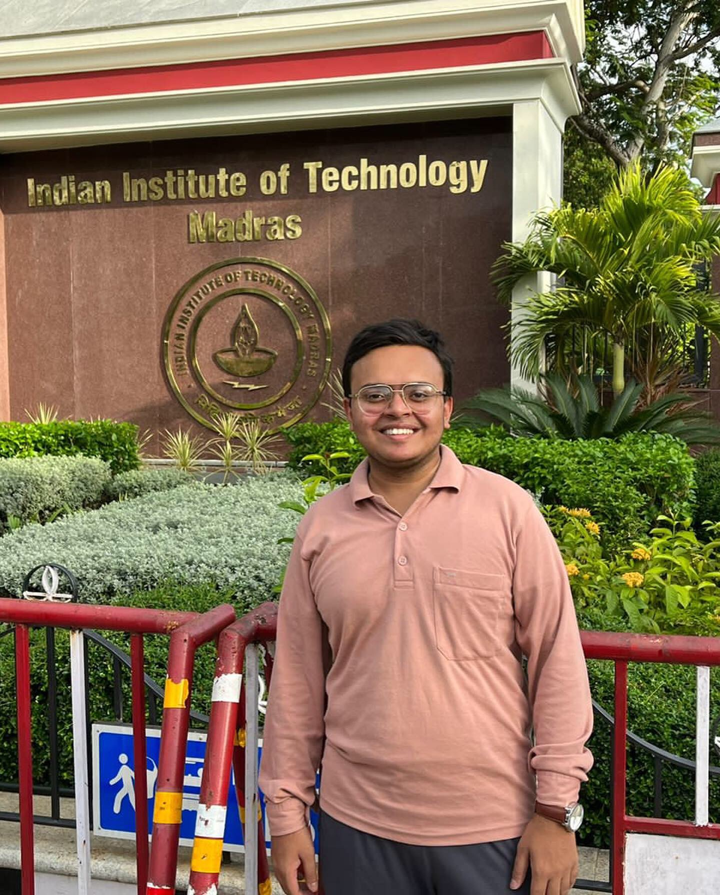

Portfolio
Introduction
 Hi, I’m Puneet, and I am passionate about data science and technology. Over the years, I have honed my skills in a variety of areas, including programming, data analysis, machine learning, and web development. I have a strong foundation in both theoretical concepts and practical applications, which allows me to solve real-world problems with creative solutions.
I believe in lifelong learning and am always seeking to improve my skill set by keeping up with the latest trends in technology. Whether it’s programming in Python, building web applications, or working with data, I am excited to take on new challenges and grow as a professional. With a keen eye for detail and a commitment to excellence, I aim to make meaningful contributions to every project I work on.
In my free time, I enjoy exploring new tech, contributing to open-source projects, and engaging in problem-solving challenges. I am also an advocate for collaboration and love working in teams to achieve shared goals. My journey in the tech industry is just beginning, and I am eager to see where my skills and passions will take me.
Academic Qualification
- BS in Data Science Applications, IIT Madras
- Class XII, Ahlcon International School, Delhi, 2019 – 98.67%
- Class X, Ahlcon International School, Delhi, 2017 – 10 CGPA
Skills
- Tools & Software: Word, Excel, PowerPoint, Access, Microsoft 365
- Programming Languages: Python, Java, C#, JavaScript, DSA, C, Kotlin
- Libraries & Frameworks: Numpy, Pandas, Scikit Learn, Seaborn, Matplotlib, Django, Flask, .Net
- Databases: SQL, Oracle, PostgreSQL
- Web and Mobile Development: HTML, MJML, CSS, JavaScript, Bootstrap, PHP, Android Studio
- Other: AWK, Bash, Sed, Regex, PyTest
Work Experience
Python Developer, LegalBook, July 2023 - Present 1
- Python API Development: Developed and maintained Python-based APIs to support the creation of a contract management tool, ensuring smooth integration with other services and seamless user experiences across the platform.
- Research and Development: Conducted R&D to explore and implement innovative solutions for improving contract management workflows, leveraging emerging technologies to optimize business operations and enhance product capabilities.
- Frontend & Backend Integration: Worked on the frontend development of React.js applications, while also managing the Python backend with Flask and Django, ensuring robust integration between the front and back-end systems for optimal functionality.
- AI & Syncfusion Integration: Integrated AI-powered language models (LLM) and Syncfusion capabilities into existing products to enhance automation, improve document processing, and streamline contract lifecycle management.
Product Engineer, Metagauss, July 2023 – July 2024 2
- PHP Plugin Development & Enhancement: Continued developing and refining PHP plugins, integrating advanced features, and ensuring compatibility with the latest platform updates to deliver robust and scalable solutions for users.
- AI Feature Integration: Led the integration of AI-driven features into existing plugins, including working on large language models (LLM) and chatbots, to enhance functionality and improve user experiences with smarter, more interactive tools.
- Team Leadership & Strategy: Worked closely with the senior admin team to establish a dedicated Data Science (DS) team, leading cross-functional efforts to execute strategic initiatives and deliver high-quality products on time, while fostering collaboration and innovation within the team.
Associate Product Strategy, Metagauss, Nov 2021 – Feb 2023 3
- PHP Plugin Development: Developed and implemented PHP plugins using WordPress, Visual Studio Code, and GitHub, contributing to the enhancement of the company’s product offerings by building robust, scalable solutions.
- API Development with Python: Designed and created Python-based APIs using Flask, collaborating with the team to integrate backend services and ensure seamless interaction between applications and databases.
- Comprehensive Documentation: Led the documentation efforts for newly developed plugins and APIs, creating detailed technical guides, code comments, and user-facing instructions to ensure clarity and ease of use for developers and end-users.
- Mobile App Development: Collaborated with the mobile development team to create a breath yoga app, designed for users to practice pranayamic exercises, integrating guided breathing routines and enhancing user engagement with health and wellness features.
Jr. Technical Content Writer, Metaguass, July 2021 – March 2022 4
- Plugin Documentation: Created comprehensive and user-friendly documentation for the company’s plugins, detailing installation, configuration, and usage instructions to ensure ease of understanding for both technical and non-technical users.
- PHP Knowledge Integration: Gained a deep understanding of PHP and its functionalities, applying this knowledge to document the technical aspects of the company’s plugins, including code structure, key features, and integration guidelines.
- Cross-functional Collaboration: Worked closely with development and engineering teams to gather technical details and ensure accuracy in all documentation, contributing to the creation of precise and well-structured content.
- Content Optimization: Ensured clarity, consistency, and accessibility in all technical documents, including troubleshooting guides and FAQs, to improve user experience and facilitate smoother onboarding for new users.
Internships
Teaching Assistant & Mentor, IIT Madras, Aug 2024 – Present 5
- Python Programming Mentor: Lead 40 classes per term, teaching a cohort of 15 students foundational Python concepts, from basic syntax to introductory object-oriented programming, ensuring hands-on learning through exercises and projects.
- Linux Systems Teaching Assistant: Assist in delivering lessons on Linux system commands, focusing on key tools like
sed,awk, and Bash scripting, helping students navigate the command line and automate tasks in Unix-like environments. - BDM Project Mentor: Guide students in completing various milestones of their Business Data Management (BDM) projects, providing mentorship and support on project management, problem-solving, and technical implementation.
Data Science Intern, IISc Bangalore, Sep 2023 – Nov 2023 6
- Data Extraction & EDA: Extracted data from various web sources using libraries like BeautifulSoup (BS), performed exploratory data analysis (EDA) to uncover trends, patterns, and insights, and prepared the data for further analysis.
- Algorithm Development & Testing: Developed and implemented simple algorithms to test and analyze a dataset of 12,000 data points, evaluating their performance and ensuring they met the project’s objectives for data processing and predictive modeling.
Summer Intern, IIIT Naya Raipur, May 2023 – July 2023 7
- Attendance System Automation: Developed and automated an attendance management system for the institute, streamlining the process of tracking and recording attendance using technology to reduce manual effort and improve accuracy.
- Mobile App Development: Contributed to the development of a mobile app to support the attendance system, ensuring seamless user experience and efficient real-time attendance tracking for students and faculty.
Teaching Assistant, IIT Madras, Jan 2023 – May 2023 8
- BDM Course Teaching Assistant: Conducted weekly classes, assisted students with course material, and provided guidance on projects related to Business Data Management (BDM), ensuring students gained practical insights and met project milestones.
- TDS (Tools in Data Science) Teaching Assistant: Supported the teaching of data science tools, facilitating classes on key concepts and tools used in the field, while helping students understand the practical applications of data analysis, visualization, and machine learning techniques.
Jr. Python/Django Associate Intern, Zummit Labs, Oct 2022 – Feb 2023 9
- Backend Development with Django & Flask: Gained hands-on experience in backend development, working with Django and Flask to build web applications, enhance server-side functionality, and optimize performance across multiple projects.
- Project Development & Learning: Contributed to the development of 3 key projects, applying learned concepts in Python, Django, and Flask to build scalable and maintainable systems while continuously improving coding skills through practical application.
SDE Intern, Alcanttor Info Soln Pvt Ltd, Oct 2022 – Jan 2023 10
- Python Development: Worked on Python-based solutions, exploring various libraries and frameworks to enhance the functionality of internal products, focusing on improving performance and adding new features.
- PHP Plugin Development: Developed PHP plugins for WordPress, contributing to the company’s internal product offerings by building and optimizing features to improve user experience and extend functionality.
- Documentation & Knowledge Sharing: Documented the development process, including code, implementation steps, and usage guidelines, ensuring clear and comprehensive resources for future reference and team collaboration.
Lead Python Mentor, IIT Madras, Aug 2022 – Sep 2022 11
- Lead Python Mentor for Pilot Project: Led the pilot project for IIT Madras’ BS program, teaching a cohort of 30 students core Python concepts, including data structures, algorithms, and object-oriented programming, ensuring high-quality learning outcomes.
- Mentorship & Instruction: Provided hands-on mentorship and guidance to students, fostering a strong understanding of Python and programming fundamentals, while conducting interactive sessions, coding challenges, and practical exercises to reinforce learning.
- Team Leadership & Oversight: Managed a team of 3 mentors, overseeing their progress, providing feedback, and ensuring consistency in teaching methods and content delivery, while also addressing student queries and ensuring smooth coordination across the team.
AI Intern, Personifwy, March 2022 – May 2022 12
- AI & ML Fundamentals: Learned the basics of artificial intelligence (AI) and machine learning (ML), building simple end-to-end projects, including developing two classification and regression models using Python to solve real-world problems.
- Search Algorithms & Project Development: Gained hands-on experience with search algorithms and their implementation in Python, building two mini-projects to apply these techniques, and deepening understanding of how to integrate algorithms into practical AI solutions.
Projects
Personal
- BDM Project Chatbot Link
- Developed an AI-powered BDM Project Chatbot using various LLM models and PDF extractors to read, process documents, and create embeddings for improved responses.
- Built a fully functional user interface with Streamlit, enabling easy access for BS students to enhance their report writing skills.
- Hosted the chatbot on GitHub, helping students better understand the nuances of BDM project writing and providing real-time guidance throughout the process.
- AI-Search Methods & Problem Solving Guide Link
- Teamed up with a friend to study various AI algorithms, including uninformed, informed, and adversarial search methods, exploring their applications and key concepts.
- Researched relevant papers for each algorithm and created an end-to-end study guide for the AI-SMPS subject, making complex topics accessible and engaging.
- Incorporated examples, diagrams, pseudocode, and Python implementations using simple data structures to help students better understand and apply AI search techniques.
- RAG Based Similarity Model Link
- Explored various LLM models to build a RAG-based similarity model, focused on document comparison and similarity assessment.
- Developed a database to store testing documents and implemented functionality to upload and compare user-uploaded documents with predefined data.
- Built a user-friendly interface using Streamlit, hosted on GitHub, allowing users to upload documents and check their similarity against the existing database.
- OCR & Normal PDF to Doc Convertor
- Developed a solution using Google Colab and Adobe API to convert both normal and OCR PDFs into searchable PDFs.
- Streamlined the process to extract text from scanned PDFs and convert them into editable DOCX files.
- Created a user-friendly system for seamless conversion, improving accessibility and editing of PDF documents for users.
- ML Sentiment Analysis
- Conducted exploratory data analysis (EDA) and feature analysis on a dataset of around 20k data points to build a robust sentiment analysis model.
- Developed a streamlined process allowing users to input any sentence and receive real-time sentiment analysis, offering insights into the emotional tone of the text.
- Mobile App Development - Breath Yoga
- Learned Figma design processes and created wireframes and UI designs for the Breath Yoga mobile app to ensure a seamless user experience.
- Designed animations using Adobe Illustrator to enhance the visual appeal and interactivity of the app.
- Developed the app using Kotlin, allowing users to practice breathing exercises with guided instructions, promoting mindfulness and well-being.
Course-Work Projects (BS)
- Business Data Management - Collected and analyzed data from a retailer to improve business operations. Using Excel, R, and Python, I conducted exploratory data analysis (EDA), identified key trends, and generated insightful reports. My findings helped the retailer optimize inventory and marketing strategies, ultimately boosting shop revenue. This project was recognized as the best of the term for its impact and analytical depth.
- Modern Application Development I - Developed a ticket booking system with a user-friendly interface using HTML, CSS, and Bootstrap. The backend was built with Flask, while PostgreSQL was used for database management. The project demonstrated my ability to integrate front-end and back-end technologies effectively.
- Modern Application Development II - Built an advanced UI of ticket booking system using Vue.js and React.js, focusing on responsiveness and performance. The backend was developed with Flask, integrating PostgreSQL for database management, Redis for caching, and Celery for task scheduling. This project showcased my skills in modern full-stack development.
- Machine Learning Practice - Solved a classification problem using ensemble learning techniques, feature selection, and feature extraction. I conducted thorough exploratory data analysis (EDA) to refine the model. My solution earned a top 10 rank out of 600 students, demonstrating strong ML skills and problem-solving ability.
- Software Engineering - Collaborated with a team to build an AI-integrated edtech platform aimed at enhancing student learning. We developed LLM-based flows to assist students in debugging code and running programming assignments more efficiently, making the learning process smoother and more interactive.
- Strategies for Professional Growth - Worked in a team, conducting interviews and gathering insights from professionals. I wrote detailed reports based on findings and focused on learning essential workplace etiquette. This experience helped me develop communication and interpersonal skills vital for success in a professional environment.
- Market Research - Collaborated with a team to collect employee satisfaction data from 200 respondents. I learned to design effective survey questions and performed data analysis using Python and R to create visualizations. Finally, I compiled the findings into a comprehensive report and presentation for stakeholders.
- Design Thinking - Worked with a team to apply the Karmic design thinking methodology through all four stages. I developed a fully functional mobile application that provides trending news and research papers in AI and ML, focusing on user needs and ensuring a seamless experience across various fields.
Publications
- Search Algorithms: Introductory Guide, Tech Blog, November 2024. Link
- Understanding polycystic ovary syndrome in light of associated key genes, Egyptian Journal of Medical Human Genetics, June 2023. Link
- Insights into microplastics and their effects on Aquatic Organisms, Journal of the Oriental Institute, March 2023. Link
- Fatty Acid Profiling and Composition in Biodiesel and Biofuels, Volume 1 Issue 4, JLRJS, November 2022. Link
- A Comprehensive Review on Potential and Prospects of Traditional Medicinal Plants for Management of Coronavirus Disease (COVID-19), Vantage Journal of Thematic Analysis, October 2022. Link
Conferences
Equinox-2022: International Conference, December 2023
- Topic Presented: Covid – 19 and Scope of Medicinal Plants against SARS-CoV2 Virus
- Won the “Best Presenter Award”
Awards
- Gold Medal, International Creative Writing Contest, Monomousumi, November 2024
- Best Business Data Management Project, IIT Madras, 2023
- Top 2 in Round Robin Hackathon, DS Hackathon, IIT Madras, 2022
- Excellence in Academic Performance, Ahlcon International School, 2019
Links
Contact Info
- Email: brpuneet898@gmail.com
- Phone: 9205055853